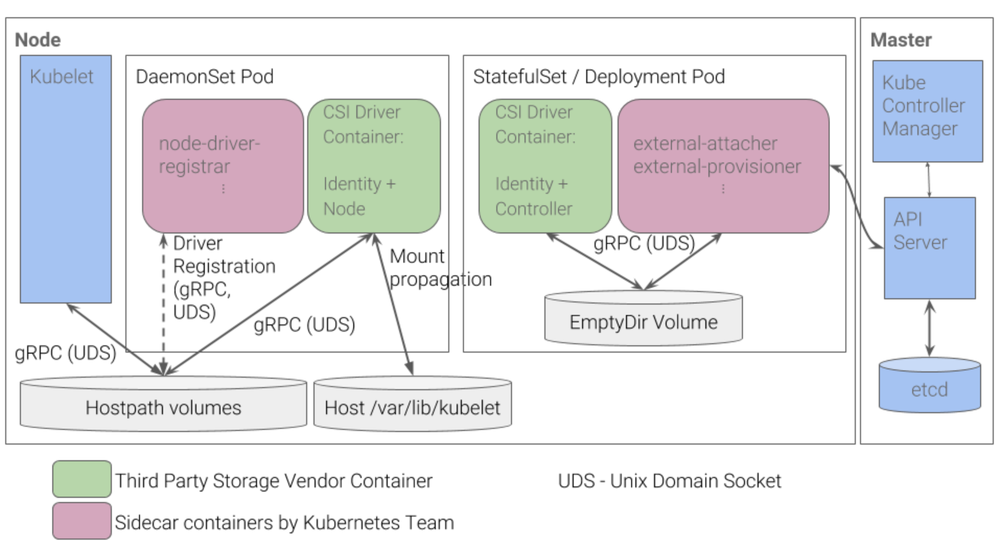
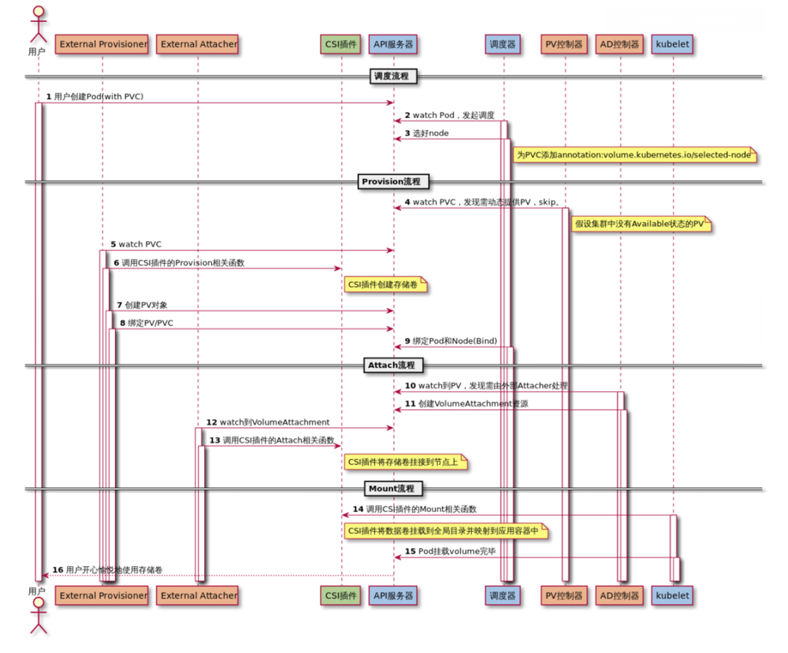
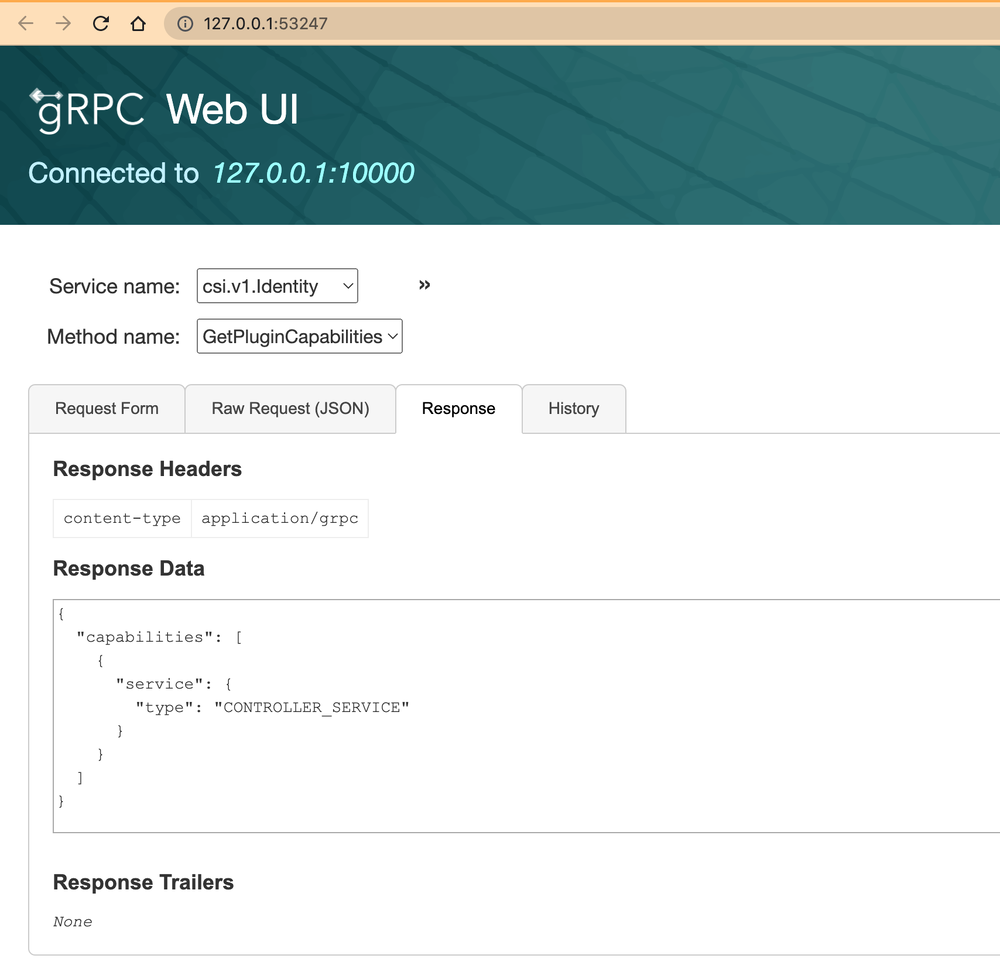

前言
外部存储接入 Kubernetes 的方式主要有两种：In-Tree 和 Out-of-Tree。其中 In-Tree 是指存储驱动的源码都在 Kubernetes 代码库中，与 Kubernetes 一起发布、迭代、管理，这种方式灵活性较差，且门槛较高。Out-of-Tree 是指存储插件由第三方编写、发布、管理，作为一种扩展与 Kubernetes 配合使用。Out-of-Tree 主要有 FlexVolume 和 CSI 两种实现方式，其中，FlexVolume 因为其命令式的特点，不易维护和管理，从 Kubernetes v1.23 版本开始已被弃用。因此 CSI 已经成为 Kubernetes 存储扩展（ Out-of-Tree ）的唯一方式。
CSI 组成

参考上图（图片出处），通常情况下：CSI Driver = DaemonSet + Deployment(StatefuleSet)。
其中：
- 绿色部分：Identity、Node、Controller 是需要开发者自己实现的，被称为 Custom Components。
- 粉色部分：node-driver-registrar、external-attacher、external-provisioner 组件是 Kubernetes 团队开发和维护的，被称为 External Components，它们都是以 sidecar 的形式与 Custom Components 配合使用的。
Custom Components
Custom Components 本质是3个 gRPC Services：
-
Identity Service
顾名思义，主要用于对外暴露这个插件本身的信息，比如驱动的名称、驱动的能力等：
service Identity { rpc GetPluginInfo(GetPluginInfoRequest) returns (GetPluginInfoResponse) {} rpc GetPluginCapabilities(GetPluginCapabilitiesRequest) returns (GetPluginCapabilitiesResponse) {} rpc Probe (ProbeRequest) returns (ProbeResponse) {} } -
Controller Service
主要定义一些无需在宿主机上执行的操作，这也是与下文的 Node Service 最根本的区别。以
CreateVolume为例，k8s 通过调用该方法创建底层存储。比如底层使用了某云供应商的云硬盘服务，开发者在CreateVolume方法实现中应该调用云硬盘服务的创建/订购云硬盘的 API，调用 API 这个操作是不需要在特定宿主机上执行的。service Controller { rpc CreateVolume (CreateVolumeRequest) returns (CreateVolumeResponse) {} rpc DeleteVolume (DeleteVolumeRequest) returns (DeleteVolumeResponse) {} rpc ControllerPublishVolume (ControllerPublishVolumeRequest) returns (ControllerPublishVolumeResponse) {} rpc ControllerUnpublishVolume (ControllerUnpublishVolumeRequest) returns (ControllerUnpublishVolumeResponse) {} rpc ValidateVolumeCapabilities (ValidateVolumeCapabilitiesRequest) returns (ValidateVolumeCapabilitiesResponse) {} rpc ListVolumes (ListVolumesRequest) returns (ListVolumesResponse) {} rpc GetCapacity (GetCapacityRequest) returns (GetCapacityResponse) {} rpc ControllerGetCapabilities (ControllerGetCapabilitiesRequest) returns (ControllerGetCapabilitiesResponse) {} rpc CreateSnapshot (CreateSnapshotRequest) returns (CreateSnapshotResponse) {} rpc DeleteSnapshot (DeleteSnapshotRequest) returns (DeleteSnapshotResponse) {} rpc ListSnapshots (ListSnapshotsRequest) returns (ListSnapshotsResponse) {} rpc ControllerExpandVolume (ControllerExpandVolumeRequest) returns (ControllerExpandVolumeResponse) {} rpc ControllerGetVolume (ControllerGetVolumeRequest) returns (ControllerGetVolumeResponse) { option (alpha_method) = true; } } -
Node Service
定义了需要在宿主机上执行的操作，比如：mount、unmount。在前面的部署架构图中，Node Service 使用 Daemonset 的方式部署，也是为了确保 Node Service 会被运行在每个节点，以便执行诸如 mount 之类的指令。
service Node { rpc NodeStageVolume (NodeStageVolumeRequest) returns (NodeStageVolumeResponse) {} rpc NodeUnstageVolume (NodeUnstageVolumeRequest) returns (NodeUnstageVolumeResponse) {} rpc NodePublishVolume (NodePublishVolumeRequest) returns (NodePublishVolumeResponse) {} rpc NodeUnpublishVolume (NodeUnpublishVolumeRequest) returns (NodeUnpublishVolumeResponse) {} rpc NodeGetVolumeStats (NodeGetVolumeStatsRequest) returns (NodeGetVolumeStatsResponse) {} rpc NodeExpandVolume(NodeExpandVolumeRequest) returns (NodeExpandVolumeResponse) {} rpc NodeGetCapabilities (NodeGetCapabilitiesRequest) returns (NodeGetCapabilitiesResponse) {} rpc NodeGetInfo (NodeGetInfoRequest) returns (NodeGetInfoResponse) {} }
以上定义取自 csi.proto，使用的是 Protocol Buffers 描述语言。
External Components
External Components 都是以 sidecar 的方式提供使用的。当开发完三个 Custom Components 之后，开发者需要根据存储的特点，选择合适的 sidecar 容器注入到 Pod 中。这里的 External Components 除了前面图中提到的 node-driver-registrar、external-attacher、external-provisioner 还有很多，可以参考官方文档，这里对常用的 sidecars 做一些简单介绍：
-
liveessprobe监视 CSI 驱动程序的运行状况，并将其报告给 Kubernetes。这使得 Kubernetes 能够自动检测驱动程序的问题，并重新启动 pod 来尝试修复问题。 -
node-driver-registrar可从 CSI driver 获取驱动程序信息（通过NodeGetInfo方法），并使用 kubelet 插件注册机制在该节点上的 kubelet 中对其进行注册。 -
external-provisioner组件对于块存储（如 ceph）非常关键。它监听PersistentVolumeClaim创建，调用 CSI 驱动的CreateVolume方法创建对应的底层存储（如 ceph image），一旦创建成功，provisioner 会创建一个PersistentVolume资源。当监听到PersistentVolumeClaim删除时，它会调用 CSI 的DeleteVolume方法删除底层存储，如果成功，则删除PersistentVolume。 -
用于监听 Kubernetes
VolumeAttachment对象并触发 CSI 的Controller[Publish|Unpublish]Volume操作。 -
监听
PersistentVolumeClaim资源修改，调用 CSIControllerExpandVolume方法，来调整 volume 的大小。
External Components 与 Custom Components 共同组成部署 yaml ，可以参考 ceph-csi 的部署yaml：
ps：其中 cephcsi 镜像是开发者实现的，包含所提的3个 gRPC 服务。
动态卷供应（Dynamic Volume Provisioning）执行过程
为了实现 Identity、Node、Controller 3个服务，需要清楚动态卷供应的执行过程。

（图片出处）
CreateVolume +------------+ DeleteVolume
+------------->| CREATED +--------------+
| +---+----^---+ |
| Controller | | Controller v
+++ Publish | | Unpublish +++
|X| Volume | | Volume | |
+-+ +---v----+---+ +-+
| NODE_READY |
+---+----^---+
Node | | Node
Stage | | Unstage
Volume | | Volume
+---v----+---+
| VOL_READY |
+---+----^---+
Node | | Node
Publish | | Unpublish
Volume | | Volume
+---v----+---+
| PUBLISHED |
+------------+
（内容取自csi-spec）
CSI Dynamic Volume Provisioning 大致流程如下：
- 用户创建 pod + pvc。
- VolumeController 的 PersistentVolumeController 控制循环监听到 pvc 创建，发现使用的是 Out-of-Tree 模式，跳过。该控制循环主要负责 In-Tree 模式下 pv 和 pvc 的绑定。
- external-provisioner 监听到 pvc 创建：
- 调用 Controller Service 的
CreateVolume方法创建底层存储 Volume。此时 Volume 属于 CREATED 状态，仅在存储系统中存在，对于所有的 Node 或者 Container 都是不可感知的。 - 创建 pv。
- 将 pv 与 pvc 绑定（绑定：将这个 pv 对象的名字填在 pvc 对象的 spec.volumeName 字段上）。
- VolumeController 的 AttachDetachController 控制循环发现 Volume 未被挂载到宿主机，需要 Attach 操作，于是创建
VolumeAttachment对象。 - external-attacher 监听到
VolumeAttachment资源创建后，调用 Controller Service 的ControllerPublishVolume方法。此时，Volume 处于 NODE_READY 状态，即：Node 可以感知到 Volume，但是容器内依然不可见。 - kubelet 的 VolumeManagerReconciler 控制循环：
- 执行 MountDevice 操作，调用 Node Service 的
NodeStageVolume方法。该方法主要实现对 Volume 格式化，然后挂载到一个临时目录（Staging 目录）上，经过此操作后，Volume 进入 VOL_READY 状态。 - 执行 SetUp 操作，调用 Node Service 的
NodePublishVolume方法：将 Staging 目录，绑定挂载到 Volume 对应的宿主机目录上，Volume 进入 PUBLISHED 状态，用户此时可以正常使用。
CSI 开发
从零开始实现一个 nfs-csi
直接实现 ceph-csi 代码量比较多，且需要基于 ceph 集群调试，对新手不太友好。所以本文先从一个简单的 nfs-csi 入手，再分析 ceph-csi 的核心代码。首先是框架搭建，因为逻辑并不复杂，所以采用一种比较扁平的目录设计：
.
├── Dockerfile
├── LICENSE
├── Makefile
├── README.md
├── driver
│ ├── controller_server.go
│ ├── driver.go
│ ├── identity_server.go
│ ├── node_server.go
│ ├── server.go // 对 gRPC Server 的一个简单封装
│ └── utils.go // 工具函数
├── yamls // 存放部署和测试yaml
├── go.mod
├── go.sum
└── main.go // 入口文件
起一个 gRPC Server，把3个服务注册到 CSI：
func (s *nonBlockingGRPCServer) serve(endpoint string, ids csi.IdentityServer, cs csi.ControllerServer, ns csi.NodeServer) {
proto, addr, err := ParseEndpoint(endpoint)
if err != nil {
klog.Fatal(err.Error())
}
if proto == "unix" {
addr = "/" + addr
if err := os.Remove(addr); err != nil && !os.IsNotExist(err) {
klog.Fatalf("Failed to remove %s, error: %s", addr, err.Error())
}
}
listener, err := net.Listen(proto, addr)
if err != nil {
klog.Fatalf("Failed to listen: %v", err)
}
opts := []grpc.ServerOption{
grpc.UnaryInterceptor(LogGRPC),
}
server := grpc.NewServer(opts...)
s.server = server
if ids != nil {
csi.RegisterIdentityServer(server, ids)
}
if cs != nil {
csi.RegisterControllerServer(server, cs)
}
if ns != nil {
csi.RegisterNodeServer(server, ns)
}
klog.Infof("Listening for connections on address: %#v", listener.Addr())
reflection.Register(server)
err = server.Serve(listener)
if err != nil {
klog.Fatalf("Failed to serve grpc server: %v", err)
}
}
不同于平时写 gRPC 服务所用的 endpoint tcp://127.0.0.1:10000，csi gRPC 是基于 UDS（UNIX Domain Socket）unix://tmp/csi.sock。UDS 是一种 IPC 通信机制，不需要经过网络协议栈，不需要打包拆包、计算校验和、维护序号和应答等，在同一台主机的通信中具有更高的性能。
关于 Debug
因为开发 csi 驱动本质是开发 gPRC 服务，常用的 gPRC 调试工具：grpcui、grpcurl 都是可以用来调试的，下图是 grpcui 使用界面 :

除此之外还有一款 csc 工具，配置一些简单的环境变量后，可以通过命令行的方式调用接口（使用文档）：
$ csc identity plugin-info --endpoint "$endpoint"
"nfs.csi.k8s.io" "v2.0.0"
Identity 实现
gPRC 架子搭好后可以开始实现接口，从最简单的 Identity 服务开始：
func (ids *IdentityServer) GetPluginInfo(ctx context.Context, req *csi.GetPluginInfoRequest) (*csi.GetPluginInfoResponse, error) {
return &csi.GetPluginInfoResponse{
Name: ids.Driver.name,
VendorVersion: ids.Driver.version,
}, nil
}
func (ids *IdentityServer) Probe(ctx context.Context, req *csi.ProbeRequest) (*csi.ProbeResponse, error) {
return &csi.ProbeResponse{Ready: &wrappers.BoolValue{Value: true}}, nil
}
func (ids *IdentityServer) GetPluginCapabilities(ctx context.Context, req *csi.GetPluginCapabilitiesRequest) (*csi.GetPluginCapabilitiesResponse, error) {
return &csi.GetPluginCapabilitiesResponse{
Capabilities: []*csi.PluginCapability{
{
Type: &csi.PluginCapability_Service_{
Service: &csi.PluginCapability_Service{
Type: csi.PluginCapability_Service_CONTROLLER_SERVICE,
},
},
},
},
}, nil
}
其中：
-
GetPluginInfo接口返回驱动的名称和版本信息，比如 ceph-csi 的名称：rbd.csi.ceph.com，该名称与 StorageClass yaml 中的provisioner字段对应：--- apiVersion: storage.k8s.io/v1 kind: StorageClass metadata: name: csi-rbd-sc provisioner: rbd.csi.ceph.com parameters: ... reclaimPolicy: Delete allowVolumeExpansion: true mountOptions: - discard -
GetPluginCapabilities接口返回插件的能力，具体可以阅读csi.proto中关于PluginCapability的注释
Controller 实现
接下来实现 Controller 服务。在 nfs CSI Controller 中，我们只需要实现 CreateVolume、DeleteVolume、ControllerGetCapabilities 即可。细心的伙伴可能会想到，nfs 其实也不用创建存储，直接挂载就可以使用：
mount -t nfs server:/root/nfsroot /root/mnt/nfs
但是，为什么需要实现 CreateVolume 方法呢？
因为我们不能将同一个 nfs 目录挂载给多个 pod 使用，不是功能上不允许，而是权限上不应该。我们应该给每个 pv 建立一个独立的目录，这样互相之间不会影响。具体做法类似于执行：
# 先把 nfs root mount 到宿主机某一临时目录
mount -t nfs nfsServer:/root/nfs /tmp/nfs-root-78y88
# 进入 root 目录创建子目录
mkdir /tmp/nfs-root-78y88/pvc-31bf63ad-80c2-451c-a9c3-f80b9bad302c
# 卸载
umount /tmp/nfs-root-78y88
这样，在后续使用时直接挂载 nfsServer:/root/nfs/pvc-31bf63ad-80c2-451c-a9c3-f80b9bad302c 即可
CreateVolume 核心代码如下：
func (cs *ControllerServer) CreateVolume(ctx context.Context, req *csi.CreateVolumeRequest) (*csi.CreateVolumeResponse, error) {
...
nfsVol, err := cs.newNFSVolume(name, reqCapacity, req.GetParameters())
if err != nil {
return nil, status.Error(codes.InvalidArgument, err.Error())
}
...
// 把nfs root挂载到一个临时目录
if err = cs.internalMount(ctx, nfsVol, volCap); err != nil {
return nil, status.Errorf(codes.Internal, "failed to mount nfs server: %v", err.Error())
}
// 取消挂载（defer）
defer func() {
if err = cs.internalUnmount(ctx, nfsVol); err != nil {
klog.Warningf("failed to unmount nfs server: %v", err.Error())
}
}()
// 获取权限和子目录名
fileMode := os.FileMode(cs.Driver.mountPermissions)
internalVolumePath := cs.getInternalVolumePath(nfsVol)
// 在nfs root目录中创建子目录
if err = os.Mkdir(internalVolumePath, fileMode); err != nil && !os.IsExist(err) {
return nil, status.Errorf(codes.Internal, "failed to make subdirectory: %v", err.Error())
}
...
return &csi.CreateVolumeResponse{Volume: cs.nfsVolToCSI(nfsVol)}, nil
}
DeleteVolume 基本同 CreateVolume，只是 mkdir 换成 rm 即可。
ControllerGetCapabilities 返回 Controller 的能力：
func (cs *ControllerServer) ControllerGetCapabilities(ctx context.Context, req *csi.ControllerGetCapabilitiesRequest) (*csi.ControllerGetCapabilitiesResponse, error) {
return &csi.ControllerGetCapabilitiesResponse{
Capabilities: []*csi.ControllerServiceCapability{
{
Type: &csi.ControllerServiceCapability_Rpc{
Rpc: &csi.ControllerServiceCapability_RPC{
Type: csi.ControllerServiceCapability_RPC_CREATE_DELETE_VOLUME,
},
},
},
{
Type: &csi.ControllerServiceCapability_Rpc{
Rpc: &csi.ControllerServiceCapability_RPC{
Type: csi.ControllerServiceCapability_RPC_SINGLE_NODE_MULTI_WRITER,
},
},
},
},
}, nil
}
Node 实现
对于 nfs，Node 服务需要实现：NodePublishVolume、NodeUnpublishVolume、NodeGetInfo、NodeGetCapabilities 。
NodeGetInfo 返回当前 node 服务运行在哪个节点，其中，nodeId 是通过环境变量 fieldRef 注入的：
func (ns *NodeServer) NodeGetInfo(ctx context.Context, req *csi.NodeGetInfoRequest) (*csi.NodeGetInfoResponse, error) {
return &csi.NodeGetInfoResponse{
NodeId: ns.Driver.nodeID,
}, nil
}
NodeGetCapabilities 需要配置以下 3 种能力：
csi.NodeServiceCapability_RPC_GET_VOLUME_STATS
csi.NodeServiceCapability_RPC_SINGLE_NODE_MULTI_WRITER
csi.NodeServiceCapability_RPC_UNKNOWN
Node 服务的核心是 NodePublishVolume 方法，需要执行 mount 操作，等价于执行：
mount -t nfs nfsServer:/root/nfs/pvc-31bf63ad-80c2-451c-a9c3-f80b9bad302c /var/lib/kubelet/pods/aad09eed-e4a2-42ca-84e4-d8301c7d6257/volumes/kubernetes.io~csi/pvc-31bf63ad-80c2-451c-a9c3-f80b9bad302c/mount
NodePublishVolume 核心代码如下：
// NodePublishVolume mount the volume
func (ns *NodeServer) NodePublishVolume(ctx context.Context, req *csi.NodePublishVolumeRequest) (*csi.NodePublishVolumeResponse, error) {
// 根据req获取source、targetPath
...
// 把 nfsServer:/root/nfs/pvc-31bf63ad-80c2-451c-a9c3-f80b9bad302c 挂载到 /var/lib/kubelet/pods/aad09eed-e4a2-42ca-84e4-d8301c7d6257/volumes/kubernetes.io~csi/pvc-31bf63ad-80c2-451c-a9c3-f80b9bad302c/mount
err = ns.mounter.Mount(source, targetPath, "nfs", mountOptions)
if err != nil {
// 错误处理
// ...
}
// 修改目录权限
if err := os.Chmod(targetPath, os.FileMode(ns.Driver.mountPermissions)); err != nil {
return nil, status.Error(codes.Internal, err.Error())
}
return &csi.NodePublishVolumeResponse{}, nil
}
至此，一个简单的 nfs-csi 就实现完成了。
Ceph-csi 核心源码解析
nfs 与 ceph 这类块存储不太相同，不需要创建磁盘（Provision）、把磁盘挂载到宿主机（Attach）操作，比如 ceph 中的：
rbd create -p pool-01 --image rbd-demo.img --size 10G
rbd map pool-01/rbd-demo.img
接下来我们简单看一下 ceph-csi 是如何用代码实现上述操作的。首先，在之前的 Dynamic Volume Provisioning 执行过程中已经讲过，Provision 应该是在 CreateVolume 方法中实现的：
// CreateVolume creates the volume in backend
func (cs *ControllerServer) CreateVolume(ctx context.Context, req *csi.CreateVolumeRequest) (*csi.CreateVolumeResponse, error) {
// 请求参数校验
if err := cs.validateVolumeReq(ctx, req); err != nil {
return nil, err
}
// 根据secret构建ceph请求凭证
cr, err := util.NewUserCredentials(req.GetSecrets())
if err != nil {
return nil, status.Error(codes.Internal, err.Error())
}
defer cr.DeleteCredentials()
// 处理请求参数，并转换为rbdVol结构体
rbdVol, err := cs.parseVolCreateRequest(ctx, req)
if err != nil {
return nil, err
}
defer rbdVol.Destroy()
// Existence and conflict checks
// 检查并获取锁（同名存储在同一时间，只能做创建、删除等操作中的一个）
if acquired := cs.VolumeLocks.TryAcquire(req.GetName()); !acquired {
klog.Errorf(util.Log(ctx, util.VolumeOperationAlreadyExistsFmt), req.GetName())
return nil, status.Errorf(codes.Aborted, util.VolumeOperationAlreadyExistsFmt, req.GetName())
}
defer cs.VolumeLocks.Release(req.GetName())
// 幂等性
found, err := checkVolExists(ctx, rbdVol, cr)
if err != nil {
if _, ok := err.(ErrVolNameConflict); ok {
return nil, status.Error(codes.AlreadyExists, err.Error())
}
return nil, status.Error(codes.Internal, err.Error())
}
// 已经存在同名卷
if found {
if rbdVol.Encrypted {
err = ensureEncryptionMetadataSet(ctx, cr, rbdVol)
if err != nil {
klog.Errorf(util.Log(ctx, err.Error()))
return nil, err
}
}
volumeContext := req.GetParameters()
volumeContext["pool"] = rbdVol.Pool
volumeContext["journalPool"] = rbdVol.JournalPool
volume := &csi.Volume{
VolumeId: rbdVol.VolID,
CapacityBytes: rbdVol.VolSize,
VolumeContext: volumeContext,
ContentSource: req.GetVolumeContentSource(),
}
if rbdVol.Topology != nil {
volume.AccessibleTopology =
[]*csi.Topology{
{
Segments: rbdVol.Topology,
},
}
}
return &csi.CreateVolumeResponse{Volume: volume}, nil
}
// 快照
rbdSnap, err := cs.checkSnapshotSource(ctx, req, cr)
if err != nil {
return nil, err
}
// 预定 rbdVolume name ，并创建 volumeID
err = reserveVol(ctx, rbdVol, rbdSnap, cr)
if err != nil {
return nil, status.Error(codes.Internal, err.Error())
}
defer func() {
if err != nil {
errDefer := undoVolReservation(ctx, rbdVol, cr)
if errDefer != nil {
klog.Warningf(util.Log(ctx, "failed undoing reservation of volume: %s (%s)"), req.GetName(), errDefer)
}
}
}()
// 创建image
err = createBackingImage(ctx, cr, rbdVol, rbdSnap)
if err != nil {
return nil, err
}
if rbdVol.Encrypted {
err = ensureEncryptionMetadataSet(ctx, cr, rbdVol)
if err != nil {
klog.Errorf(util.Log(ctx, "failed to save encryption status, deleting image %s"),
rbdVol.RbdImageName)
if deleteErr := deleteImage(ctx, rbdVol, cr); err != nil {
klog.Errorf(util.Log(ctx, "failed to delete rbd image: %s/%s with error: %v"),
rbdVol.Pool, rbdVol.RbdImageName, deleteErr)
return nil, deleteErr
}
return nil, err
}
}
volumeContext := req.GetParameters()
volumeContext["pool"] = rbdVol.Pool
volumeContext["journalPool"] = rbdVol.JournalPool
volume := &csi.Volume{
VolumeId: rbdVol.VolID,
CapacityBytes: rbdVol.VolSize,
VolumeContext: volumeContext,
ContentSource: req.GetVolumeContentSource(),
}
if rbdVol.Topology != nil {
volume.AccessibleTopology =
[]*csi.Topology{
{
Segments: rbdVol.Topology,
},
}
}
return &csi.CreateVolumeResponse{Volume: volume}, nil
}
创建磁盘镜像：
import librbd "github.com/ceph/go-ceph/rbd"
func createImage(ctx context.Context, pOpts *rbdVolume, cr *util.Credentials) error {
...
err = librbd.CreateImage(ioctx, pOpts.RbdImageName,
uint64(util.RoundOffVolSize(pOpts.VolSize)*util.MiB), options)
if err != nil {
return errors.Wrapf(err, "failed to create rbd image")
}
return nil
}
可以看到 ceph-csi 中是使用 librbd 库连接 ceph 集群进行 image 创建。除此之外，还需要注意 CreateVolume 实现的幂等性。因为 k8s 可能因为一些其他原因（比如网络超时重试）重复发送请求，实现中需要对此进行判断，不可重复创建。
接下来看 Attach，理论上 Attach 操作应该是在 ControllerPublishVolume 方法中实现的，但实际上 ceph 的 map 命令需要到对应的宿主机上才能执行，所以实现是在 NodeStageVolume 方法：
func (ns *NodeServer) NodeStageVolume(ctx context.Context, req *csi.NodeStageVolumeRequest) (*csi.NodeStageVolumeResponse, error) {
...
// perform the actual staging and if this fails, have undoStagingTransaction
// cleans up for us
transaction, err = ns.stageTransaction(ctx, req, volOptions, staticVol)
if err != nil {
return nil, status.Error(codes.Internal, err.Error())
}
...
return &csi.NodeStageVolumeResponse{}, nil
}
func (ns *NodeServer) stageTransaction(ctx context.Context, req *csi.NodeStageVolumeRequest, volOptions *rbdVolume, staticVol bool) (stageTransaction, error) {
...
// Mapping RBD image
var devicePath string
devicePath, err = attachRBDImage(ctx, volOptions, cr)
...
stagingTargetPath := getStagingTargetPath(req)
...
// 挂载到 nodeStage
err = ns.mountVolumeToStagePath(ctx, req, staticVol, stagingTargetPath, devicePath)
...
// 设置权限
err = os.Chmod(stagingTargetPath, 0777)
return transaction, err
}
func attachRBDImage(ctx context.Context, volOptions *rbdVolume, cr *util.Credentials) (string, error) {
...
// 判断 image 是否已经 map 到 node 上
devicePath, found := waitForPath(ctx, volOptions.Pool, image, 1, useNBD)
if !found {
backoff := wait.Backoff{
Duration: rbdImageWatcherInitDelay,
Factor: rbdImageWatcherFactor,
Steps: rbdImageWatcherSteps,
}
err = waitForrbdImage(ctx, backoff, volOptions, cr)
if err != nil {
return "", err
}
// 执行 map 操作
devicePath, err = createPath(ctx, volOptions, cr)
}
return devicePath, err
}
func createPath(ctx context.Context, volOpt *rbdVolume, cr *util.Credentials) (string, error) {
// Map options
mapOptions := []string{
"--id", cr.ID,
"-m", volOpt.Monitors,
"--keyfile=" + cr.KeyFile,
"map", imagePath,
}
...
// Execute map
output, err := execCommand(rbd, mapOptions)
...
return devicePath, nil
}
可以看到，attach实际就是执行 rbd map 指令，与之前的设想一致。函数嵌套比较深，此处只保留了核心代码，完整代码可以参考 ceph-csi。
参考资料
- https://github.com/kubernetes-csi/csi-driver-nfs
- https://kubernetes-csi.github.io/docs/introduction.html
- https://github.com/container-storage-interface/spec/blob/master/spec.md
- https://kingjcy.github.io/post/cloud/paas/base/kubernetes/k8s-store-csi/
- https://github.com/ceph/ceph-csi
- 《深入剖析 Kubernetes》— 张磊